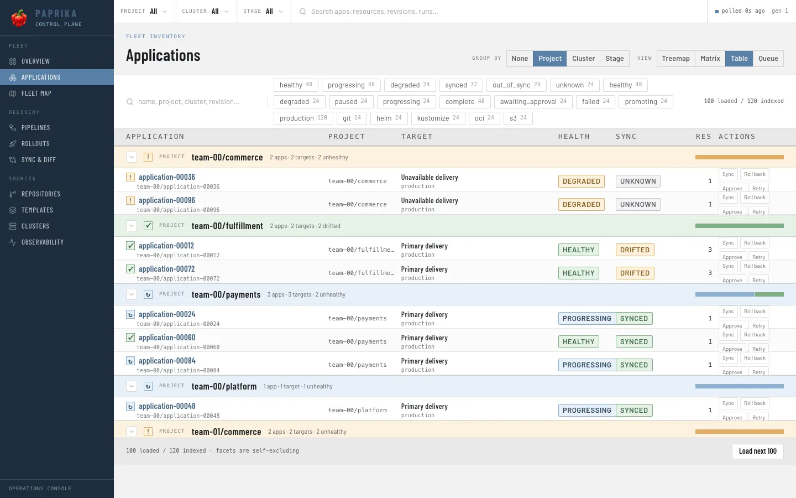
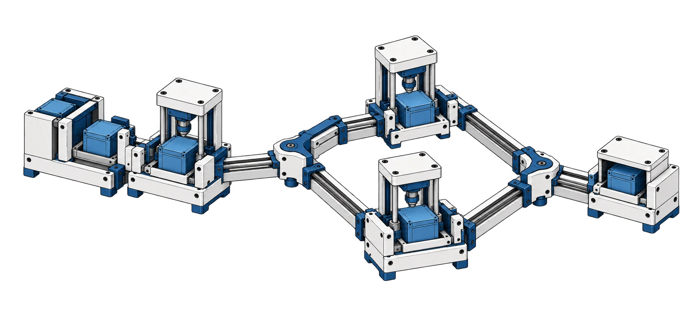
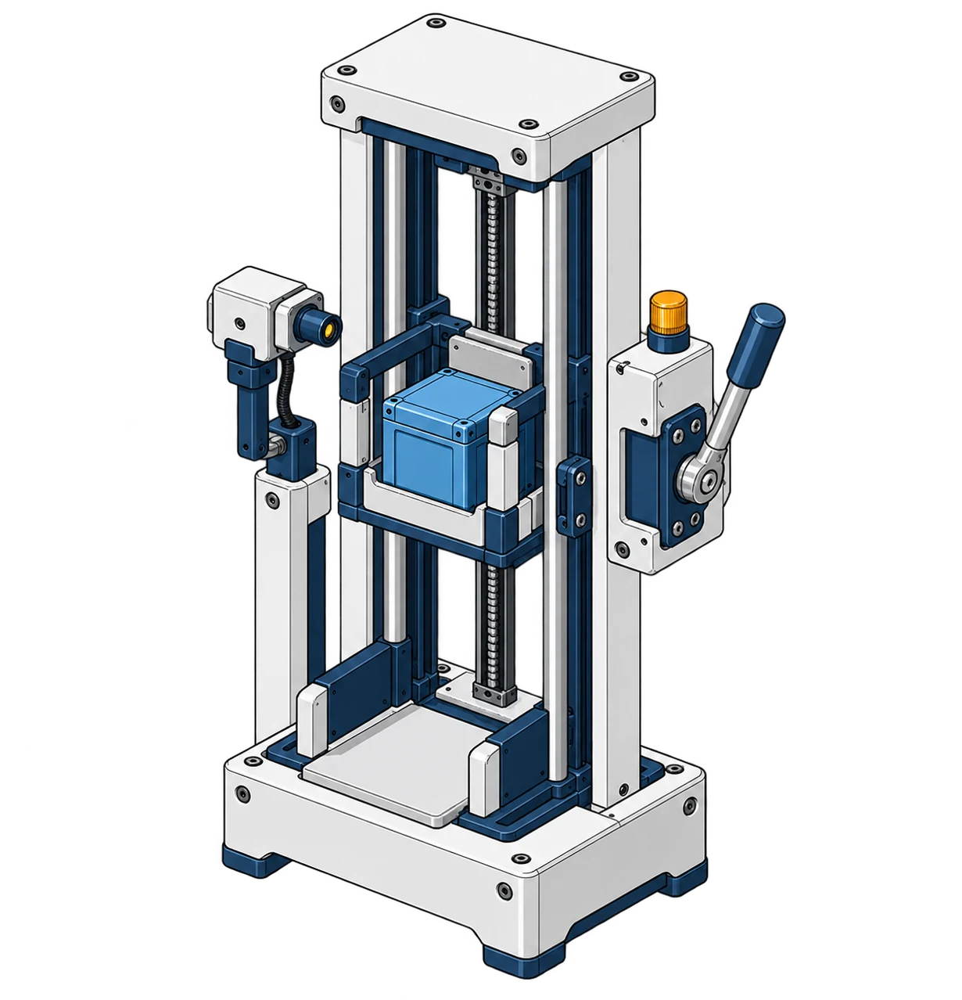
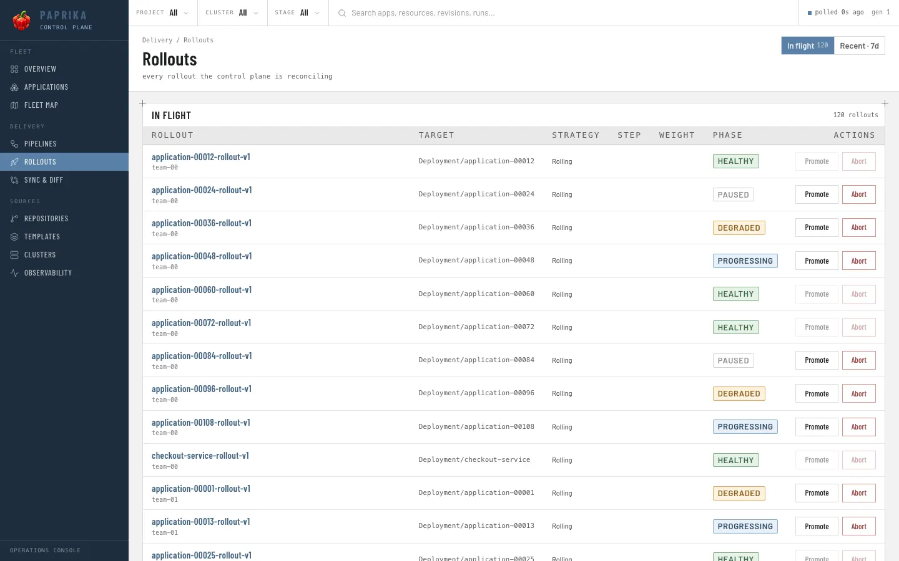
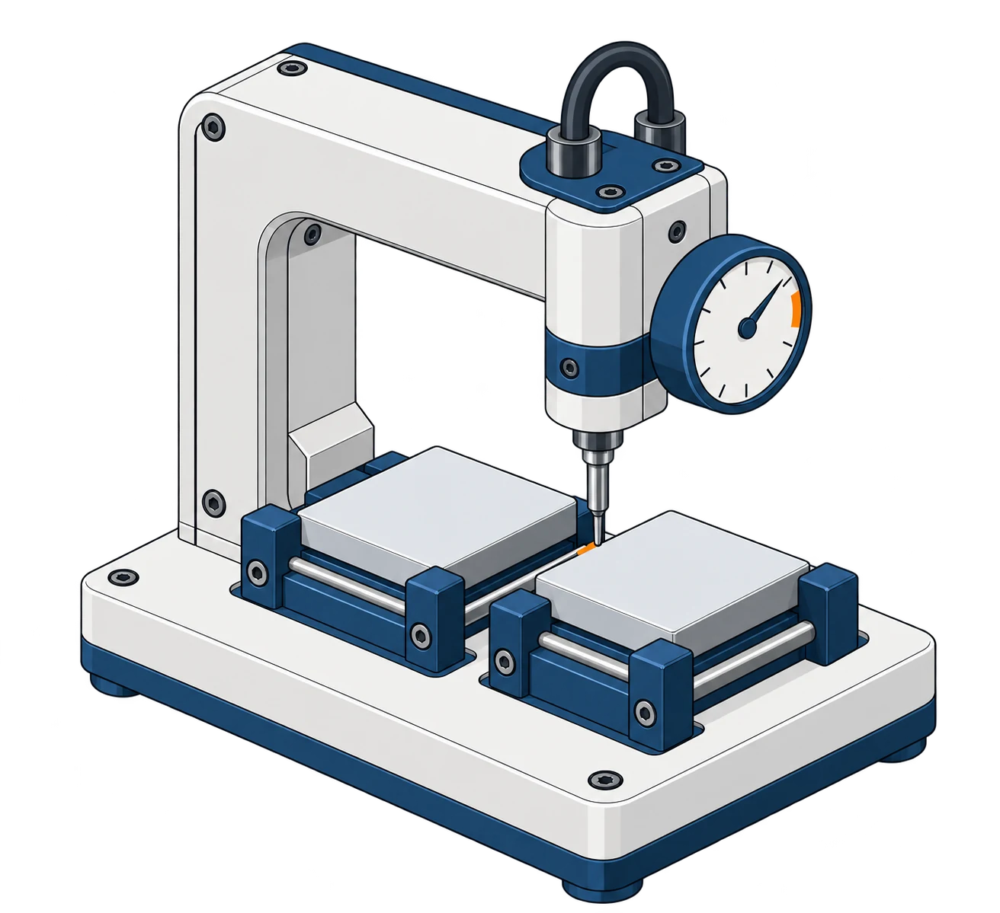

Open source Kubernetes delivery
Trace every release.
Follow an Application from source to rollout and health. When configured, Pipeline steps and staged promotion add their own inspectable records.
Apache 2.0 · early stage · evaluate on a non-production cluster.

The fleet
Find the signal.
Group Applications by project, inspect target, health and sync together, and open the resource that needs a closer look.
Project, cluster and stage controls keep large inventories navigable.
Health and sync are separate states. A healthy workload can still differ from its desired resources.
The Application owns related Template, Stage and Release records.
Application guidePipeline workflow
Dependencies are the route.
A Pipeline runs container steps with declared dependencies. Independent steps can run in parallel when the configuration permits; an output can record a declared artifact reference.


The diagram explains configuration. The console capture shows where run phase and step progress can be inspected.
Read the Pipeline guideStaged promotion
Promote one commit.
Use a separate Application for each environment. A downstream Promotion trigger selects the upstream completed release’s exact Git commit, then applies its own configured verification and deployment policy.
- Dev
- Discovers the source candidate.
- Staging
- Verifies the upstream release before deployment.
- Production
- Can require manual approval when configured.


Resource evidence
Inspect the result.
Read Application and Release status, then compare desired resources with what the cluster reports. Paprika exposes current out-of-sync and prunable resource counts as metrics.
- StatusPhase, conditions and related Release state
- SyncDesired and live resource comparison
- MetricsCurrent resource counts, not a fabricated score

paprika_out_of_syncCurrent out-of-sync resource countpaprika_prunableCurrent prunable resource countRun it yourself
Start on a test cluster.
Self-hosting means selecting a registry image the cluster can pull, installing the Helm chart, and applying a complete Application manifest. Check the active Kubernetes context first.
- 01
Prepare
Use Kubernetes, kubectl, Helm, Docker and Go 1.26+. Cert-manager is needed only if you enable admission webhooks.
- 02
Install
Build and push an operator image, pass its tag to the chart, then check the controller pod.
- 03
Apply
Create an Application from a complete manifest. Inspect its status and the related Release.
git clone https://github.com/paprikacd/paprika.git
cd paprika
kubectl config current-context
# Replace with your registry and immutable tag.
make docker-build docker-push IMG=YOUR_REGISTRY/paprika:YOUR_TAG
make helm-deploy IMG=YOUR_REGISTRY/paprika:YOUR_TAG
kubectl get pods -n paprika-system
# After saving a complete Application manifest:
kubectl apply -f application.yamlOptional CLI
Inspect with the command line.
The CLI installer downloads a published release archive and verifies its checksum. The CLI is separate from installing the operator. Use your own server address when self-hosting.
curl -fsSL https://raw.githubusercontent.com/paprikacd/paprika/master/install.sh | shcurl -fsSL https://raw.githubusercontent.com/paprikacd/paprika/master/install.sh | PAPRIKA_VERSION=vX.Y.Z shcurl -fsSL https://raw.githubusercontent.com/paprikacd/paprika/master/install.sh | PAPRIKA_INSTALL_DIR="$HOME/.local/bin" shCopy unavailable? Select the command text and copy it manually.
Platform and integrity
Darwin (macOS) and Linux on amd64 and arm64. The installer checks the archive against the release checksum before replacing the binary.
Version and checksum
Set PAPRIKA_VERSION=vX.Y.Z. Audit the latest published checksums. A pinned release uses https://github.com/paprikacd/paprika/releases/download/vX.Y.Z/checksums.txt.
No implicit privilege escalation
The script never invokes sudo. Set PAPRIKA_INSTALL_DIR to a writable directory; if it falls back to ~/.local/bin, it prints the exact PATH export. Homebrew is not yet supported.
Build from source
Clone the canonical repository and compile the CLI with the pinned Go toolchain.
git clone https://github.com/paprikacd/paprika.git cd paprika go build -o ./bin/paprika ./cmd/paprika
Build in the open
Help shape Paprika.
Bring a reproducible bug, a question from your first install, a focused feature idea, or a docs fix. Issues are the current public support and planning channel.
Open an issueParticipation follows the Code of Conduct. Review the Apache 2.0 license before reusing the code.